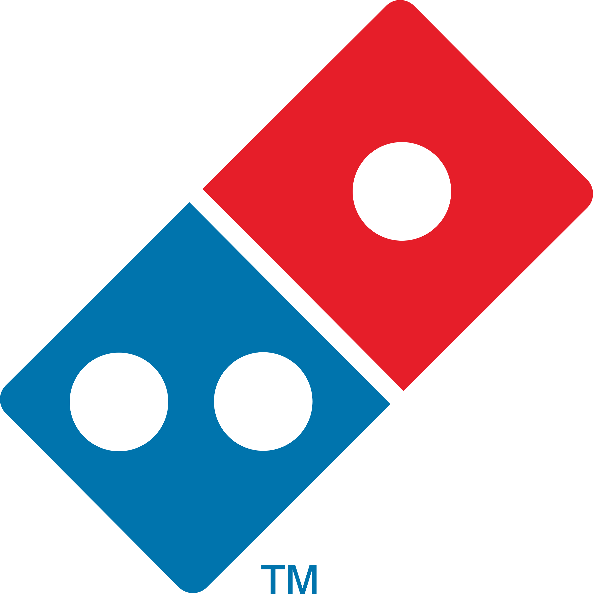

Hello and welcome to my github pages. My name is Aiman Bin Shamjafri. As of December 2020, i'm a student of Kolej Yayasan Pelajaran Johor in Diploma Science Computer (Information Technology) on last semester. I'm looking for internship placement around Johor Bahru, Kulai and Kota Tinggi in order to widen my view and increase my knowledge in this field. This page will introduce myself and provide my contact information.Thank you.❤️
If I were to describe myself, the word is adept. While communication skill quite normal, my listening skill is great. Study in Diploma Science Computer, my adaptivity helped a lot for me to get a grasp on programming skill which is a new experience to me. As a result, my field of Interest is software programming and database management. As you can see on the chart provided, those were programming language that I study during 5 semester in this course. Of course, some of it require me to do self-study to increase my expertise. Other than class, my main source of study is Youtube such as Programming with Mosh and The New Boston.
|  |
|
|
|
Email : pp9735513@gmail.com ashamjafri@gmail.com |
❤️❤️❤️ |
Phone : 011-3159 1169 017-774 0719 |